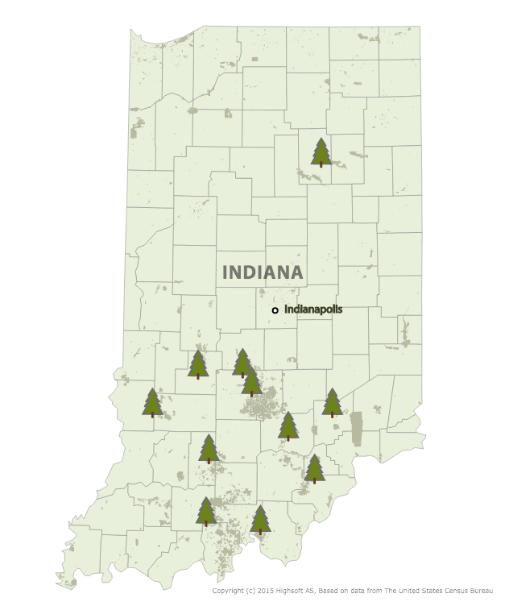

Projects
This page features the prpjects we have worked on in IDV460. Just click the headline to view my work.
Use of drinking water.
The global water crisis claims 3.4 million lives each year. The 3.4 million people with names, families, hopes and dreams are now confronted with this reality that we must respond. The water crisis is not someone else's crisis. It's all of ours.
When people gain access to have clean water , all amazing things will happened. Their jobs are created, sickness is prevented, and health got guaranteed. It is significant for all of us to understand that how important the clean water is not only for the place that lack of clean water.Water is a fundamental human need for every people that each people on Earth requires at least 20 to 50 liter of clean, safe water a day for drinking and simply keeping themselves clean and healthy.
Indiana Tree's Logging Analysis
Indiana state forests today are a reminder of what Indiana’s land looked like before settlers moved in and started replacing trees with crops. Logging in the early 1900s changed the landscape dramatically. What were once lush, tall forests were flattened. Indiana's vast wetlands were paved over to create paths for easy travel.
By 19XX, most of the forest was gone, with only XX percent remaining. Concerned Hoosiers set aside land in 1932 (was it a law enacted?) to be used as a resource for future generations. Recently, with the state’s growing emphasis on budget tightening, priorities have changed. State forest logging has increased 1000 percent in the last decade, prompting a battle over how to manage these forests.